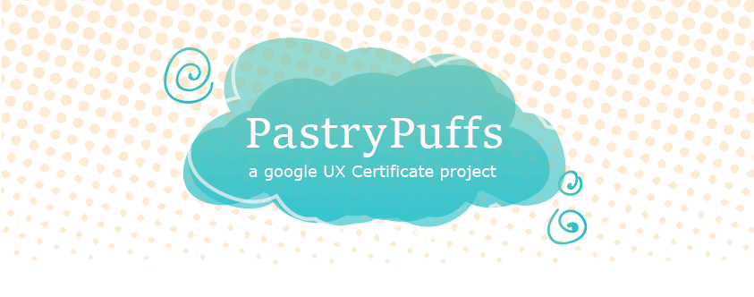
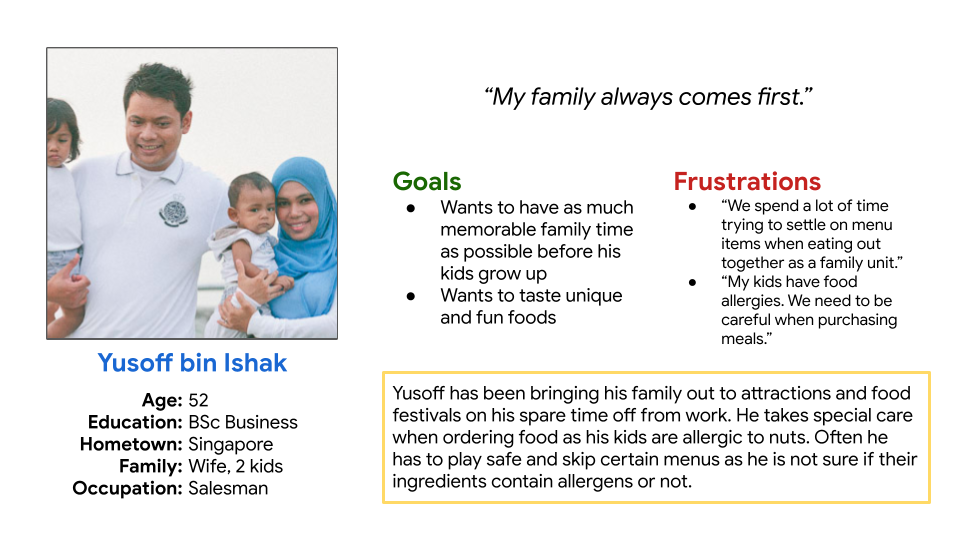
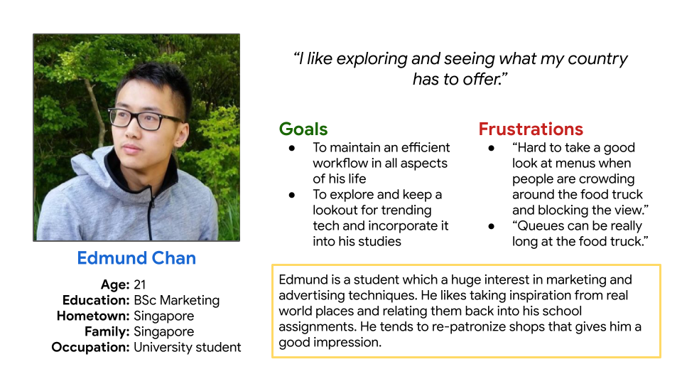

Project
Create a mobile app to showcase the menu items of ‘Pastrypuffs’, a food truck specializing in boutique puffs.
Role
UX Designer
UX Researcher
Duration
Oct 2021 - Feb 2022
Process Deck
The Challenge
Current menu presentation does not accommodate patrons with food allergies and health concerns
Patrons are unable to preview and pre-order their Pastrypuff orders
Target Audience
Busy patrons who would like to preview and pre-order their purchases
Patrons with diet restrictions and food allergies
Goals
Provide updated menu presentation with allergens and nutrition facts clearly labelled, as well as an alternative platform for patrons to make orders from
Research: Surveys
A survey was conducted among friends and family, and I have condensed the results into two Personas


User Testing
Menu has too much information
Text not presented in a pleasing way
Transaction details unclear (receipts, queue numbers)
Conclusion
The ease of purchase has made it a lot easier for customers to buy from the food truck, increasing their reputation and business in a positive way.
Participants have expressed satisfaction using the app as an alternative method to purchasing Pastrypuff’s pastries.
I have learned that improving accessibility in my designs will end up assisting a lot more people, and should keep this in mind moving forward when updating this app in future.
Process Deck